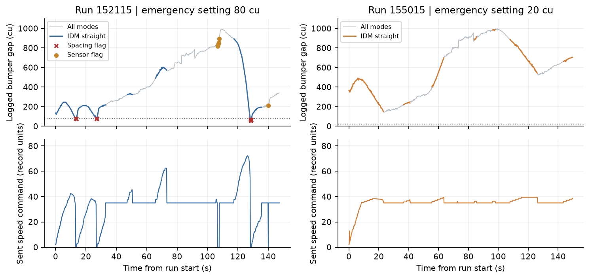
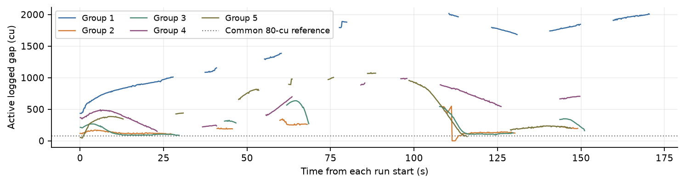

This experiment combined human-driving data collection, microscopic-model calibration and two physical following tests on the SC2I scaled testbed. The second test recorded larger minimum gaps and no emergency flags. However, a retrospective code review found a relative-speed sign discrepancy in the calibration model, while the tests also differed in their safety setting. The retained results therefore document the completed procedure and observed behavior; they do not establish independent validation of the intended IDM.
A prescribed-speed leader was followed first by a human-controlled scaled vehicle and then by an automated follower. The driver used the simulator's camera view, steering wheel and pedals. During automated testing, the supplied program applied IDM following on eligible straight-road intervals and bypass commands elsewhere. Consequently, active following and whole-run behavior are reported separately.
Two human-driving collections were retained: September 17 and September 22. The second collection, run 2, supplied the selected calibration data. Its straight-zone records span approximately 304 seconds, including two laps. Short segments without simultaneous leader and follower coverage were excluded.
| Processing stage | Retained run-2 data |
|---|---|
| Trim and sort raw straight-zone records | 3435 rows |
| Split and pair continuous segments | 13 candidate events |
| Synchronize on a 0.1-second grid | 8 overlapping events |
| Prepare calibration inputs | 1140 paired samples |
Synchronization used the temporal intersection of each paired segment, linear interpolation and a maximum permitted source span of 0.3 seconds. Five candidate events lacked overlap. Duplicate rounded times and nonpositive projected headways were removed with recorded exclusions. Genuine within-event stopping was retained rather than silently treated as bad data.
Calibration speeds were derived from positions. Headway was projected along the follower heading and a platform vehicle-length constant of 250 coordinate units was subtracted. This historical projection convention differs from forward route-distance spacing in the command logs; the two measures are not pooled. The position-derived/reported-speed discrepancy was approximately 2.8 during cruising. Physical length scale and command-response gain remain unresolved, so testbed distances are reported in coordinate units (cu).
The calibration code instead supplied leader-minus-follower speed to the positive dynamic-gap term. The same discrepancy occurs in its NumPy evaluation, differentiable training graph and TGSIM extension. The supplied TA controller uses the intended sign. Thus the offline calibration model and the physical controller were not the same acceleration law. All fitted values and errors below are retained historical outputs of that offline implementation, not corrected IDM estimates.
The trajectory-based methods used the normalized objective below. Instantaneous least squares instead minimized acceleration residuals; its reported trajectory errors were evaluated on the same events for comparison.
Each trajectory starts from its first measured spacing and follower speed, with measured leader speed as input. Events have equal objective weight. Four reported methods were instantaneous acceleration least squares, genetic algorithm, particle swarm and differentiable trajectory fitting. The differentiable method used bounded sigmoid parameters and multistart Adam; the retained run-2 configuration used 10 starts, 300 steps and learning rate 0.05. Training used Euler integration; final candidate evaluation used RK4. The acceleration exponent was fixed at four.
| Method | Mean gap RMSE (cu) | Mean speed RMSE (cu/s) |
|---|---|---|
| Instantaneous least squares | 51.72 | 12.37 |
| Genetic algorithm | 40.14 | 11.70 |
| Particle swarm | 41.38 | 11.83 |
| Differentiable fitting | 39.45 | 11.74 |
| Parameter set | v0 | T | s0 | a | b |
|---|---|---|---|---|---|
| Historical selected fit | 123.358 | 2.091 | 28.723 | 13.974 | 185.159 |
| First physical test | 123.36 | 2.09 | 28.72 | 13.97 | 185.16 |
| Second physical test | 41.12 | 2.09 | 28.72 | 13.97 | 185.16 |
The differentiable result was selected during the experiment. Similar fitting errors among the trajectory methods are historical comparisons on a shared implementation; they cannot establish correct model structure, global optimality, generalization or physically meaningful braking parameters.
| Event | Samples | Gap RMSE (cu) | Speed RMSE (cu/s) |
|---|---|---|---|
| 1 | 184 | 180.65 | 17.66 |
| 3 | 49 | 23.00 | 18.90 |
| 6 | 251 | 19.56 | 6.88 |
| 7 | 216 | 36.32 | 12.96 |
| 8 | 28 | 9.20 | 9.72 |
| 9 | 101 | 20.92 | 9.07 |
| 12 | 169 | 15.91 | 9.91 |
| 13 | 142 | 10.08 | 8.84 |
The trajectory comparison is summarized by its saved event residuals. Event 1 has substantially larger gap error than the other events and also exceeds its constant-mean gap baseline of 40.92 cu. The eight-event mean gap RMSE is 39.45 cu, but this average conceals the launch-event mismatch. The event table uses the retained machine-readable fit results consistently rather than the unreconciled values in earlier report drafts.
These trajectories reconstruct the same events used for fitting, initialized from each event's measured first state. They are therefore in-sample reconstruction evidence. They are not an independent test of generalization, and shared errors between training and evaluation code do not validate the intended IDM equation.
| Recorded setting | Run 152115 | Run 155015 |
|---|---|---|
| Desired speed parameter | 123.36 | 41.12 |
| Emergency-spacing setting (cu) | 80 | 20 |
| Minimum-spacing floor (cu) | 80 | 80 |
| Leader / curve speed settings | 40 / 35 | 40 / 35 |
| Follower command records | 737 | 749 |
| IDM-straight command records | 312 | 319 |
The second test divided the desired-speed parameter by three, leaving the other four fitted parameters at their configured values. Its emergency-spacing threshold also changed. Command cadence was approximately 0.2 seconds. The tests were separate runs with different evolving states, not matched repetitions differing in a single isolated factor.
A trustworthy out-of-sample trajectory-error table would require an agreed state/command unit mapping and a model matching the implemented controller and vehicle response. The retained record does not establish those conditions. No new validation prediction RMSE is asserted here. The following section instead reports directly traceable physical observations, with the sign and unit limitations stated explicitly.
| Command-log statistic | Run 152115 | Run 155015 |
|---|---|---|
| Whole-run minimum gap (cu) | 52.28 | 143.29 |
| IDM-straight minimum gap (cu) | 52.28 | 149.26 |
| IDM-straight median gap (cu) | 207.44 | 543.39 |
| Spacing-emergency flagged rows | 10 | 0 |
| Center-sensor flagged rows | 7 | 0 |
| Distinct flagged episodes | 5 | 0 |

Run 152115 contains three spacing-emergency episodes starting at approximately 13.25, 26.86 and 128.27 seconds, plus two center-sensor episodes starting at 106.66 and 140.06 seconds. Its 17 flagged command rows are not 17 independent incidents. Sensor flags are retained as recorded; the logs alone do not establish whether an external obstacle or a sensor fault caused them.
Run 155015 has no emergency flags and maintains an active-control gap above 149 cu, exceeding both its own 20-cu emergency setting and the first run's 80-cu setting. This is a favorable observation in that run. It does not prove general safety or isolate a unit conversion as the cause of improvement. The whole-run minimum is lower because it occurs outside IDM-straight operation.
| Group | v0 | T | s0 | a | b |
|---|---|---|---|---|---|
| 1 | 40.00 | 7.55 | 126.34 | 5.32 | 80.00 |
| 2 | 188.50 | 4.17 | 23.90 | 139.60 | 355.80 |
| 3 | 130.20 | 3.19 | 30.00 | 22.77 | 26.46 |
| 4 | 41.12 | 2.09 | 28.72 | 13.97 | 185.16 |
| 5 | 112.76 | 1.65 | 92.46 | 9.10 | 45.19 |
Group 1 combines low desired speed with the largest desired time gap and standstill gap. Group 2 has the largest desired speed and acceleration parameters; Group 5 has the shortest time-gap parameter. Group 4's desired speed is its deployed 41.12, not the original fitted 123.36. These differences suggest nominal policy differences, but fitting methods, data, channel conventions and initial states prevent a causal driver-style ranking from parameter values alone.
| Group | Active min (cu) | Active median (cu) | Active flagged rows | All-mode episodes |
|---|---|---|---|---|
| 1 | 434.6 | 1347.7 | 2 | 4 |
| 2 | 0.0 | 132.8 | 6 | 2 |
| 3 | 87.5 | 129.2 | 0 | 0 |
| 4 | 149.3 | 543.4 | 0 | 0 |
| 5 | 44.4 | 364.0 | 0 | 0 |

Group 1 has the largest active median gap; Group 4 has the next largest. Group 2 records zero gap and spacing-emergency intervention, while Group 5 reaches 44.4 cu without a native flag because its emergency setting is 20 cu. All five datasets use that 20-cu setting. A common gap reference is therefore more informative than comparing flag absence alone.
Group 4 shows wider recorded margins than Groups 2, 3 and 5 in this scenario. No physical comfort winner is claimed: differences of logged model acceleration are control-demand diagnostics, not measured ride jerk after actuator dynamics and safety overrides. One run per group, mode switching and unequal starting gaps limit broader conclusions.
The supplied HV-HV and HV-AV trajectories provide a descriptive real-world comparison. Retained preprocessing yields 10 events and 4251 samples for HV-HV, and 8 events and 4370 samples for HV-AV, at 0.1-second sampling. The historical analysis treated coordinates and vehicle lengths as metres and speed as metres per second; position-difference speeds are consistent with the supplied speed channel.
The historical gap estimator was Euclidean separation minus the leader's length. The original documentation alternated between center and front-bumper reference points, so that geometrical assumption still requires confirmation. The following errors and parameter values preserve that estimator and the historical reversed-sign implementation; they are not newly estimated standard-IDM results.
| Pair | v0 | T | s0 | a | b |
|---|---|---|---|---|---|
| HV-HV | 33.003 | 2.865 | 3.465 | 3.661 | 7.825 |
| HV-AV | 34.887 | 5.000 | 3.155 | 1.890 | 7.972 |
| Pair | Gap RMSE (m) | Gap MAE (m) | Speed RMSE (m/s) | Speed MAE (m/s) |
|---|---|---|---|---|
| HV-HV | 2.662 | 2.223 | 0.395 | 0.314 |
| HV-AV | 9.258 | 7.986 | 0.859 | 0.625 |
These raw fitted parameters cannot be directly compared numerically with the scaled platform's coordinate-unit parameters. Even dimensionless combinations would retain the model-sign and reference-point assumptions. The desired-speed and braking estimates approach their search-box limits, while observed speeds are far below the fitted desired speed; strong parameter interpretations are not justified by these fits.
| Pair | All-event gap (m) | Interaction gap (m) | All-event speed (m/s) |
|---|---|---|---|
| HV-HV | 8.32 | 8.32 | 2.03 |
| HV-AV | 8.79 | 8.21 | 2.25 |
The two sparse HV-AV events have mean gaps of 28.10 and 41.23 m. They increase pooled fitting difficulty and aggregate spacing without representing the same interaction regime as dense following. Removing them is a sensitivity analysis, not proof that the model is correct. The observed gap medians in interacting events are similar across the two pairs. Repeated events from one pair are not independent drivers, so no population-level AV safety or comfort advantage is inferred.
The retained record demonstrates an end-to-end workflow: human following data were collected, synchronized and used to produce a selected parameter set; two physical automated-following tests were then recorded. The second test has larger active gaps and no logged emergency flags. Across five group datasets, parameter settings and observed gaps differ substantially. The real-world pairs further illustrate how interaction regime and aggregation affect comparisons.
The offline calibration law differs from the intended and deployed IDM. Its reconstruction errors therefore describe a historical implementation rather than independent validation of the intended model. The sign error is a separate limitation from the approximately 2.8 speed-channel discrepancy. Neither successful numerical fitting nor improvement in a later physical run proves that units were the sole cause of the first run's behavior.
A consistent future unit ledger should distinguish position scale, reported velocity, returned speed commands and actuator response. The supplied route map is already available, but does not explicitly establish a physical scale. Its coordinates alone cannot resolve that scale without documentation or a known physical measurement. A fully consistent parameter conversion cannot be treated as experimentally validated from the current records.
The historical Lab I TTC function also reversed the closing-speed sign. Its affected TTC values and derived safety scores are excluded here. Physical acceleration, jerk, end-to-end latency and fuel use were not independently validated; no comfort, delay or energy ranking is inferred from command cadence or model acceleration. Mode-dependent logged gap statistics provide a more direct account of the observed tests.
The main practical result is the favorable recorded behavior of the second configuration within its particular test. The main methodological result is the importance of checking the implemented model, channel units, safety settings and metric definitions before interpreting calibration quality as physical validation. The historical fitted values and deployment records are preserved. No recalibration, new physical trial or corrected optimum is introduced in this report.
Stronger future evidence would require a corrected and independently checked model implementation, documented state/command units, reliable trajectory-derived dynamics and repeated matched tests. Those steps are prospective work; the current conclusions remain restricted to the observations available.
[1] INTR 5100, Lab Session I Guidelines: Car-Following Model Calibration. [2] Lab Session I report template. [3] Supplied human and validation trajectory files, command logs and configuration metadata. [4] Retained fitting outputs: m1_params.json, m3_params.json, m4_params.json and m5_params.json; TGSIM calibration and presentation-statistics records. [5] Retrospective code review and read-only verification records accompanying this report.
All physical-test statistics in this revision are descriptive summaries of existing follower command logs. All fitted parameters and fit errors are taken from retained results. Raw experimental files, historical model equations and machine-readable scientific results were preserved.